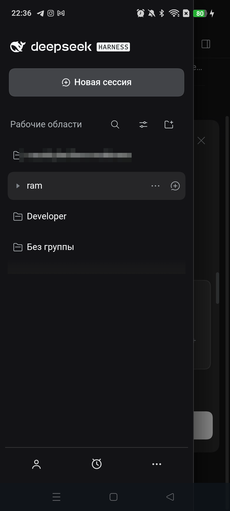
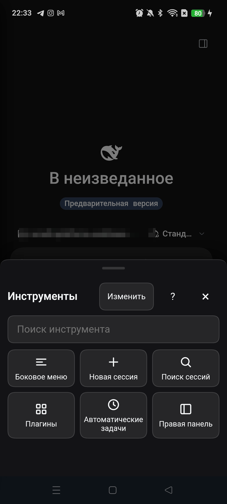
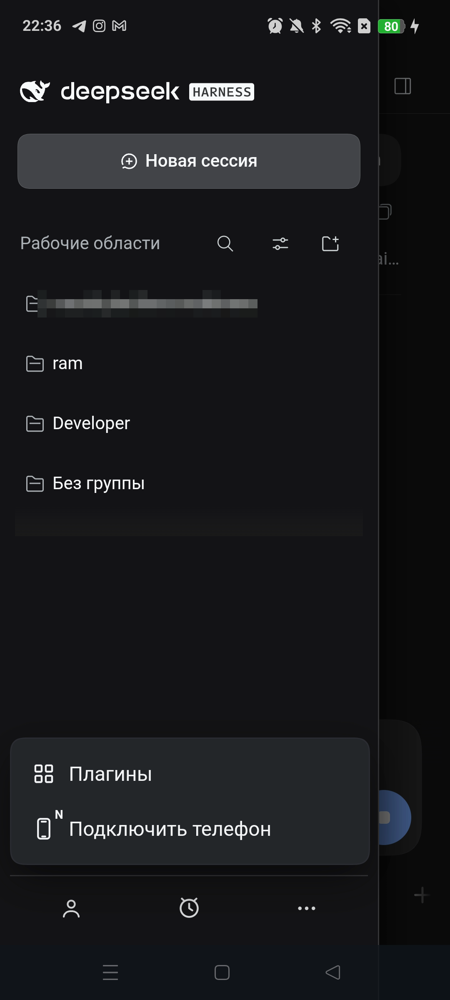

macOS + Windows + Linux
macOS — основной путь; Windows/Linux — бета. Установите плагин, откройте APK и работайте с тем же DSH.
DDeck — пульт к DeepSeek Harness на macOS, Windows и Linux (Windows/Linux — бета). Чат, инструменты, файлы и терминал; переключение компьютеров без разрыва сессии.

Один раз сопрягите каждый компьютер. Дальше — выбирайте нужный в боковом меню: DDeck помнит их все и не рвёт текущую сессию.
macOS — основной путь; Windows/Linux — бета. Установите плагин, откройте APK и работайте с тем же DSH.
«Ещё → Сменить компьютер»: откройте другой ноутбук или сервер, а сессия на прежнем останется на месте.
Инструменты, очередь, файлы, терминал, уведомления и голосовой ввод — без удалённого рабочего стола.
Первый телефон уже сопряжён с компьютером. Он показывает QR и одноразовый код — второй телефон подключается к тому же DSH и получает свою независимую сессию. Не нужно быть рядом с компьютером и не нужно передавать пароль от аккаунта.
Сначала на компьютере: панель DDeck → «Второй телефон» → задайте пароль (6–64 символа).
На первом телефоне: боковое меню → «Ещё» → «Подключить телефон».
Введите пароль компьютера из панели DDeck — появится QR и код.
Второй телефон сканирует QR и работает в своём DSH. Первый можно закрыть.
Так можно выдать доступ коллеге, второму устройству или планшету — под вашим контролем, с отзывом в панели DDeck.
Desktop-профиль. Для web/CLI — замените desktop на web.
dsh plugin --profile desktop add ddeck-remoteВажно: полностью перезапустите DSH — панель DDeck появляется при старте.
Нет npm? Гайд по установке из репозитория.
Android 10+. Приложение проверяет наличие обновлений и предлагает открыть релиз.
Скачать APKSHA-256 и ограничения — в release notes.
В DSH откройте панель DDeck → «Новый код». На телефоне — «Сканировать QR». Код одноразовый и живёт 5 минут.
Откройте «Ещё → Сменить компьютер», чтобы добавить второй компьютер или переключиться. Все ошибки и решения.
Сначала — стабильность и обратная связь. Затем — облако, командный доступ и другие платформы.
DDeck Cloud как простой способ подключиться без Tailscale и своего VPS. Рабочая область — в мобильном приложении.
Пароль, роли и отзыв доступа к одному компьютеру или серверу. Несколько людей — один DSH, каждый со своей сессией.
Адаптация под iPhone, iPadOS и Android-планшеты: крупные панели, клавиатура, split view.
Совместный доступ к рабочей области в облаке или на сервере — глазами мобильного приложения.
Это планы, а не обещания по датам. Подробнее — ROADMAP.md.


Нет, если телефон и компьютер в одной сети. Для доступа из любой сети — Tailscale (бесплатен для личного использования) или свой VPS-релей.
Несколько. Список хранится в телефоне; переключение — «Ещё → Сменить компьютер». Каждый компьютер хранит свои сессии.
Свой TLS-сертификат с закреплением, одноразовый QR на 5 минут, токены в Android Keystore. Сегодня облака DDeck нет; управляемый DDeck Cloud — в планах.
После беты и тестов. Сейчас — Android и GitHub Releases; Google Play/RuStore и iOS/iPadOS в планах.